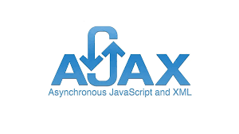

Asynchronous JavaScript and XML (AJAX) JavaScript es un lenguaje de programación muy conocido. Entre otras funciones, gestiona el contenido dinámico de un sitio web y permite la interacción dinámica del usuario. XML es otra variante de un lenguaje de marcado como HTML, como lo sugiere su nombre: eXtensible Markup Language. Mientras HTML está diseñado para mostrar datos, XML está diseñado para contener y transportar datos. Tanto JavaScript como XML funcionan de forma asíncrona en AJAX. Como resultado, cualquier aplicación web que use AJAX puede enviar y recuperar datos del servidor sin la necesidad de volver a cargar toda la página. |
Ejemplo:
|